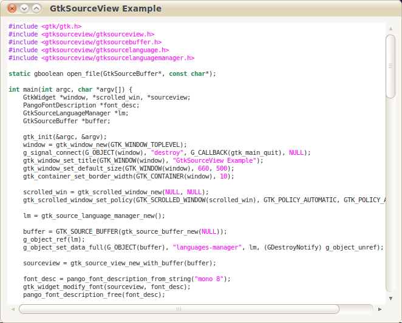

本著作係採用創用 CC 「姓名標示 2.5 台灣版」授權條款釋出。
本著作係採用創用 CC 「姓名標示 2.5 台灣版」授權條款釋出。
書本上提到GtkSourceView這個Widget，所以找個範例程式玩玩看。因為自己用的版本和孤狗找到的範例似乎不太一樣，所以順便參考GtkSourceView Reference Manual修改一下。
#include <gtk/gtk.h>
#include <gtksourceview/gtksourceview.h>
#include <gtksourceview/gtksourcebuffer.h>
#include <gtksourceview/gtksourcelanguage.h>
#include <gtksourceview/gtksourcelanguagemanager.h>
static gboolean open_file(GtkSourceBuffer*, const char*);
int main(int argc, char *argv[]) {
GtkWidget *window, *scrolled_win, *sourceview;
PangoFontDescription *font_desc;
GtkSourceLanguageManager *lm;
GtkSourceBuffer *buffer;
gtk_init(&argc, &argv);
window = gtk_window_new(GTK_WINDOW_TOPLEVEL);
g_signal_connect(G_OBJECT(window), "destroy", G_CALLBACK(gtk_main_quit), NULL);
gtk_window_set_title(GTK_WINDOW(window), "GtkSourceView Example");
gtk_window_set_default_size(GTK_WINDOW(window), 660, 500);
gtk_container_set_border_width(GTK_CONTAINER(window), 10);
scrolled_win = gtk_scrolled_window_new(NULL, NULL);
gtk_scrolled_window_set_policy(GTK_SCROLLED_WINDOW(scrolled_win), GTK_POLICY_AUTOMATIC, GTK_POLICY_AUTOMATIC);
lm = gtk_source_language_manager_new();
buffer = GTK_SOURCE_BUFFER(gtk_source_buffer_new(NULL));
g_object_ref(lm);
g_object_set_data_full(G_OBJECT(buffer), "languages-manager", lm, (GDestroyNotify) g_object_unref);
sourceview = gtk_source_view_new_with_buffer(buffer);
font_desc = pango_font_description_from_string("mono 8");
gtk_widget_modify_font(sourceview, font_desc);
pango_font_description_free(font_desc);
gtk_container_add(GTK_CONTAINER(scrolled_win), GTK_WIDGET(sourceview));
gtk_container_add(GTK_CONTAINER(window), scrolled_win);
gtk_widget_show_all(window);
open_file(buffer, "/home/terence/lab/gnu/gtk/text/sourceview/example1.c");
gtk_main();
return 0;
}
static gboolean open_file(GtkSourceBuffer *sBuf, const gchar *filename) {
GtkSourceLanguageManager *lm;
GtkSourceLanguage *language = NULL;
GError *err = NULL;
gboolean reading;
GtkTextIter iter;
GIOChannel *io;
gchar *buffer;
g_return_val_if_fail (sBuf != NULL, FALSE);
g_return_val_if_fail (filename != NULL, FALSE);
g_return_val_if_fail (GTK_IS_SOURCE_BUFFER (sBuf), FALSE);
/* get the Language for C source mimetype */
lm = g_object_get_data (G_OBJECT (sBuf), "languages-manager");
// 改用下面 gtk_source_language_manager_get_language(GtkSourceLanguageManager*, const gchar*)這個method
//language = gtk_source_languages_manager_get_language_from_mime_type (lm, "text/x-csrc");
language = gtk_source_language_manager_get_language(lm, "c");
g_print("Language: [%s]\n", gtk_source_language_get_name(language));
if (language == NULL) {
g_print ("No language found for mime type `%s'\n", "text/x-csrc");
// 我用的版本好像沒這個attribute
//g_object_set (G_OBJECT (sBuf), "highlight", FALSE, NULL);
} else {
gtk_source_buffer_set_language (sBuf, language);
// 我用的版本好像沒這個attribute
//g_object_set (G_OBJECT (sBuf), "highlight", TRUE, NULL);
}
/* Now load the file from Disk */
io = g_io_channel_new_file (filename, "r", &err);
if (!io) {
g_print("error: %s %s\n", (err)->message, filename);
return FALSE;
}
if (g_io_channel_set_encoding (io, "utf-8", &err) != G_IO_STATUS_NORMAL) {
g_print("err: Failed to set encoding:\n%s\n%s", filename, (err)->message);
return FALSE;
}
gtk_source_buffer_begin_not_undoable_action (sBuf);
//gtk_text_buffer_set_text (GTK_TEXT_BUFFER (sBuf), "", 0);
buffer = g_malloc (4096);
reading = TRUE;
while (reading) {
gsize bytes_read;
GIOStatus status;
status = g_io_channel_read_chars (io, buffer, 4096, &bytes_read, &err);
switch (status) {
case G_IO_STATUS_EOF: reading = FALSE;
case G_IO_STATUS_NORMAL:
if (bytes_read == 0) continue;
gtk_text_buffer_get_end_iter ( GTK_TEXT_BUFFER (sBuf), &iter);
gtk_text_buffer_insert (GTK_TEXT_BUFFER(sBuf),&iter,buffer,bytes_read);
break;
case G_IO_STATUS_AGAIN: continue;
case G_IO_STATUS_ERROR:
default:
g_print("err (%s): %s", filename, (err)->message);
/* because of error in input we clear already loaded text */
gtk_text_buffer_set_text (GTK_TEXT_BUFFER (sBuf), "", 0);
reading = FALSE;
break;
}
}
g_free (buffer);
gtk_source_buffer_end_not_undoable_action (sBuf);
g_io_channel_unref (io);
if (err) {
g_error_free (err);
return FALSE;
}
gtk_text_buffer_set_modified (GTK_TEXT_BUFFER (sBuf), FALSE);
/* move cursor to the beginning */
gtk_text_buffer_get_start_iter (GTK_TEXT_BUFFER (sBuf), &iter);
gtk_text_buffer_place_cursor (GTK_TEXT_BUFFER (sBuf), &iter);
g_object_set_data_full (G_OBJECT (sBuf),"filename", g_strdup (filename), (GDestroyNotify) g_free);
return TRUE;
}
為了使用gtksourceview除了安裝gtksourceview之外，還要將書本範例程式Makefile裡面有關library的設定加上gtksourceview，修改後的Makefile如下
EXES = $(basename $(wildcard *.c))
CC = gcc
CFLAGS = -Wall -g `pkg-config --cflags --libs gtk+-2.0 gtksourceview-2.0`
all:
$(MAKE) $(EXES)
%: %.c
$(CC) $(CFLAGS) $@.c -o $@.out
clean:
rm -f $(EXES) *.out
執行結果如下

本著作係採用創用 CC 「姓名標示 2.5 台灣版」授權條款釋出。